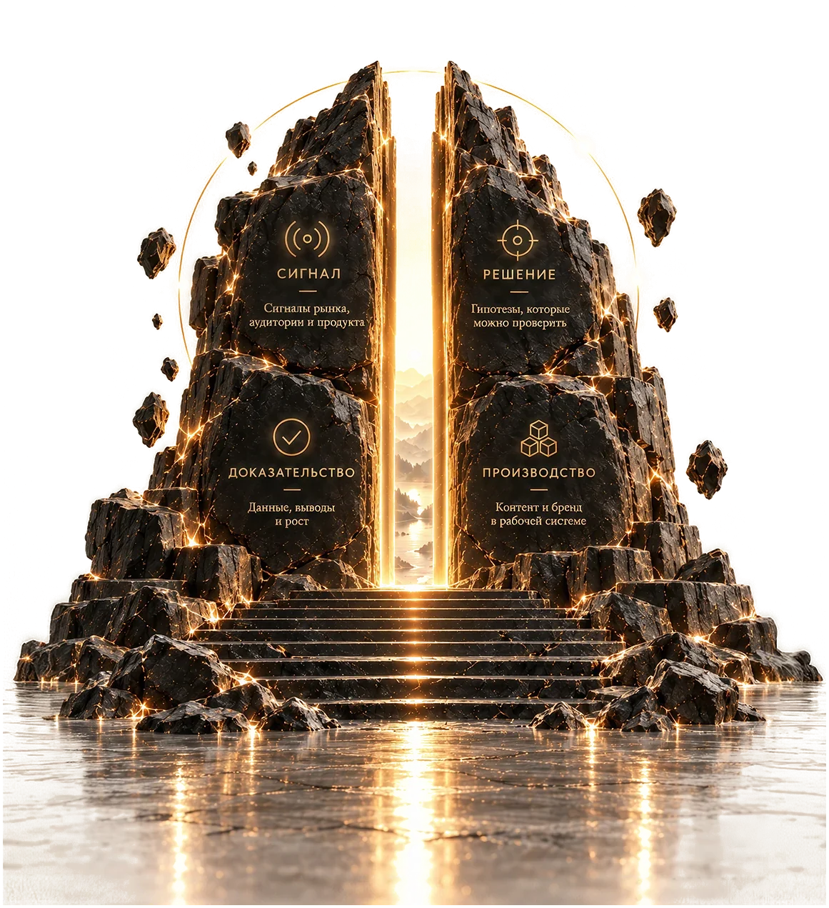

Creative director · brands in e-commerce and on marketplaces
From a new niche
to steady sales.
Easy.
I read the market, build the brand’s visual language and set up production that keeps the brand consistent across all seven channels. 13 years in design, 3.5 of them leading the creative team of a kitchen-appliance brand.
StrategyVisual languageContentSales
One cycle
for all of it

01 System
How this works
One decision travels one path, and the path is written down in Notion: hypothesis, production, release, number, norm. 15 linked databases, a task tracker with time and revision budgets, and metrics arriving through APIs from VK (a Russian social network), YouTube and the marketplaces Ozon and Wildberries, the two largest in Russia.
Below are the five foundations it rests on. The system is wider.
A live database,
open in full
02 Niche
Twenty
minutes
The first twenty minutes in a new niche
I get into an unfamiliar niche and break it down into standard tasks. The first pass is four steps, and it runs on public data — no access to internal reports.
-
01
I name the flow
The process the money runs through: marketplace search results, subscription, repeat purchase.
-
02
I show the gap
Where the flow leaks. Listings, landing pages, emails and shelf placement show it from the outside.
-
03
I put a number on it
One line: what changes and how far it should move. Without a number there is nothing to test.
-
04
I pick a cheap test
A week, on materials we already have.
From public
data
A week to read an unfamiliar market
Competitors’ topics, formats, advertising and channels. The output is a map of standard tasks the team can start on the same day.
Two or three breakdowns of other markets go here: the market, the gap, a hypothesis with a number. Being collected now.
03 Case study
From an appliance catalogue to a community around the product
A kitchen-appliance brand (blenders, dehydrators, juicers), 35+ SKUs across seven channels. Brand platform, visual language, a community around the product.
The system is
not decoration
04 Contact
Looking for a creative director role
E-commerce, marketplaces, consumer brands. I’ll start by reading your niche.